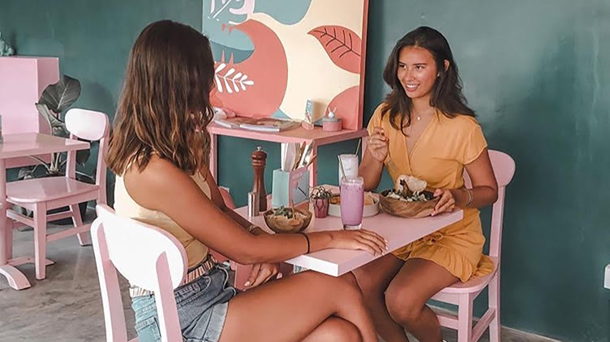

1 / 3

Banner Image
3 / 3

People
Using Photoshop and photos from the previous assignment make these six images:
1) Improve the lighting and legibility of the washed out/overexposed image.
2) Improve the lighting and legibility of the murky/underexposed image.
3) Crop the portrait, the close-up, and the location to squares and make a banner featuring all three side-by-side at equal size, with a pleasing amount of whitespace in between them.
4) Crop the picture of the group to 16:9 ratio.
5) Overlay the J+D department logo in an appealing way over any image of your choice (keep this separate from the other submissions, even if you use one of the same images). jd-logo.svg.
Change image every 3 seconds: